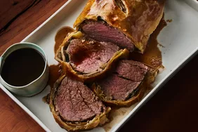

Lasagna
How to make the perfect lasagna
Ingredients
- 1lb of ground meat of choice, this could be beef/pork/lamb or a meat substitute
- 1 large onion sliced
- Tomatoes canned or fresh cut and a tin of tomato sauce
- Herbs of your choice, can be fresh or jar, parsley, and one crushed garlic clove
- Quarter teaspoon of sugar: to reduce acidity from tomatoes
Extra Spices and Seasonings such as basil, oregano, salt and black pepper
- Slices of ready formed pasta layers or pasta noodles
- Cheeses: Cottage cheese, Parmesan, Mozzarella and or Cheddar cheese
- 3 large eggs
How to make the Lasagna
- Cook the meat(or alternative): Cook the ground meat in a skillet until browned and crumbly.
- Add the onion and continue cooking until it's translucent
- Stir in the canned tomato products, half of the parsley, garlic, basil, 1.5 teaspoons of salt, oregano, a
- Cook the noodles or pasta layers: Boil the lasagna noodles/layers in lightly salted water until they're al dente(firm texture)
- Make the cheese layer: Mix cottage cheese, Parmesan cheese, eggs, the remaining parsley, the remaining salt, and pepper in a bowl
- Assemble the lasagna: Layer the ingredients according to the recipe (starting with sauce and ending with mozzarella) until the lasagna is assembled
- Bake the lasagna: Cover with foil and bake in the preheated oven for about half an hour. Remove the foil and continue baking until the top is golden brown
2 ½ pounds beef tenderloin
4 tablespoons butter, softened, divided
2 tablespoons butter
1 onion, chopped
½ cup sliced fresh mushrooms
2 ounces liver paté
salt and pepper to taste
1 (17.5 ounce) package frozen puff pastry, thawed
1 large egg yolk, beaten
1 (10.5 ounce) can beef broth
2 tablespoons red wine
Cover the beef with butter and bake until browned.
Sauté the onions and mushrooms in butter. Mix the paté with butter and seasonings.
Spread the paté mixture over the beef and top with the veggie mixture.
Roll out the pastry dough and place beef in the center.
Fold up and seal all the edges, place in a baking dish, cut a few slits in the top, and brush with egg yolk.
Bake according to the instructions until the pastry is golden brown.
Make the red wine sauce and serve alongside the Beef Wellington.